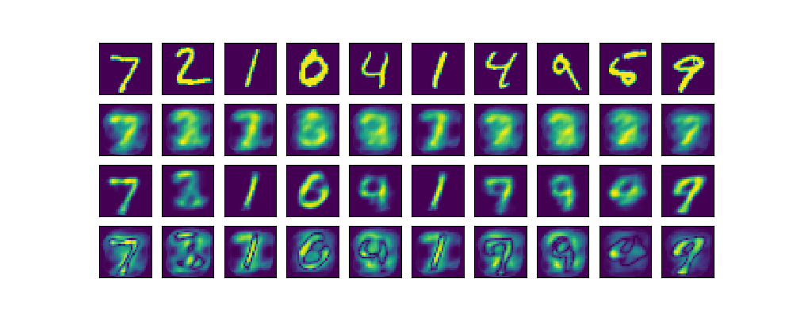
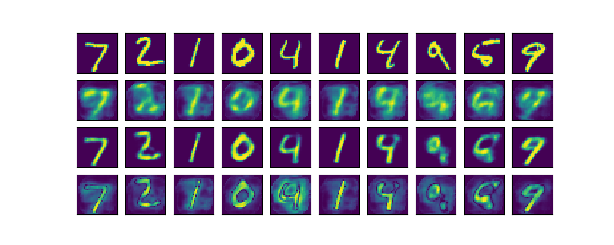
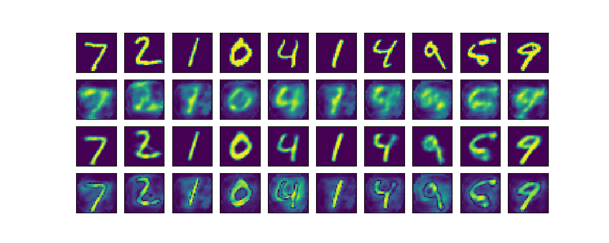
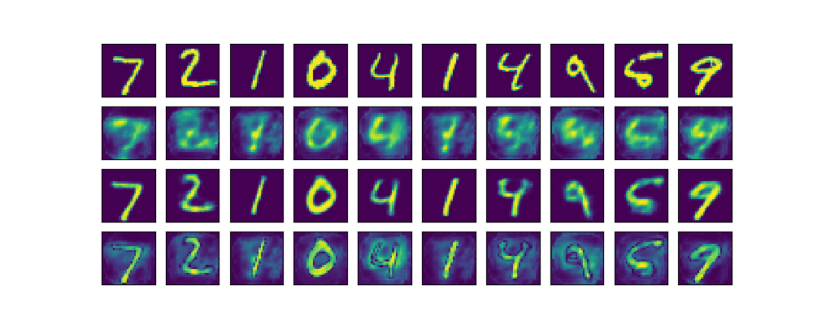
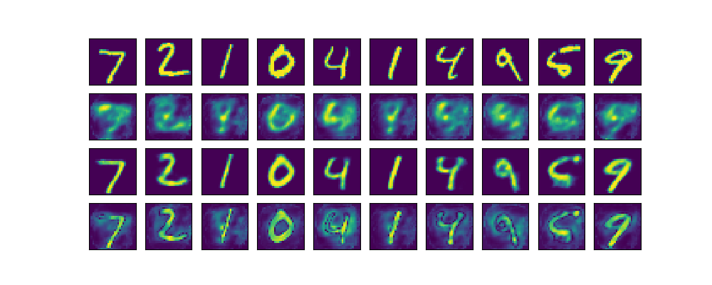
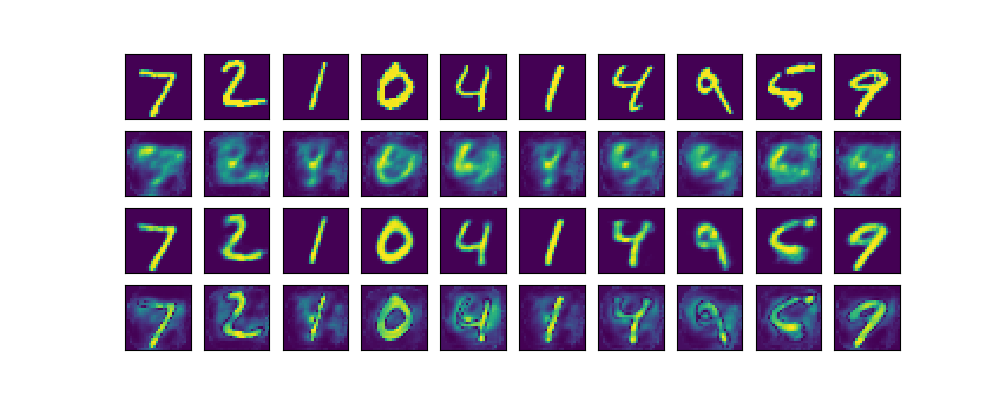
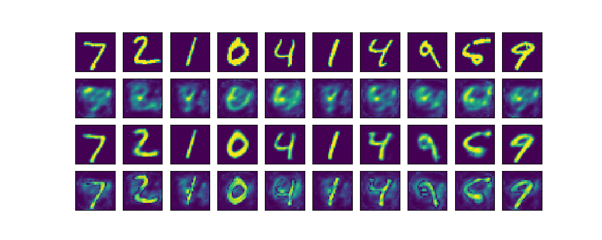
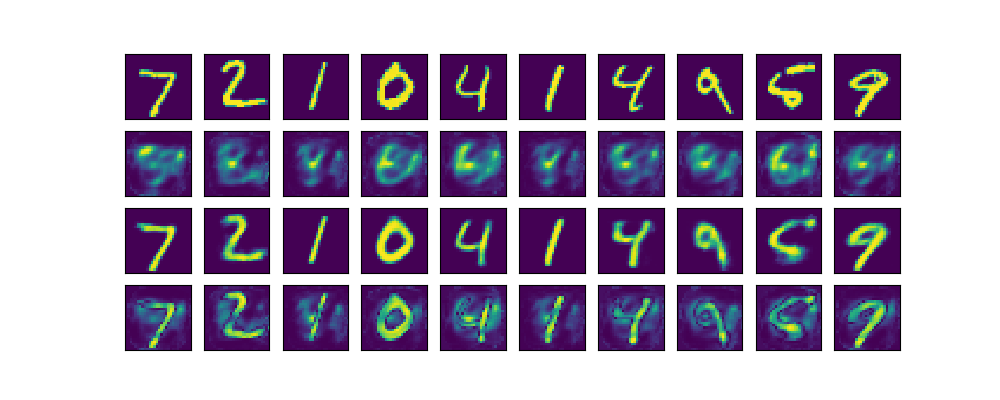

Reconstructions With Tuned Hyperparameters
In the following each figure consists of four rows: (1) input image, (2) first pass reconstruction, (3) second pass reconstruction, (4) difference
between first and second pass reconstructions.
1000 iterations:

2000 iterations:

3000 iterations:

4000 iterations:

5000 iterations:

6000 iterations:

7000 iterations:

8000 iterations:
9000 iterations:
